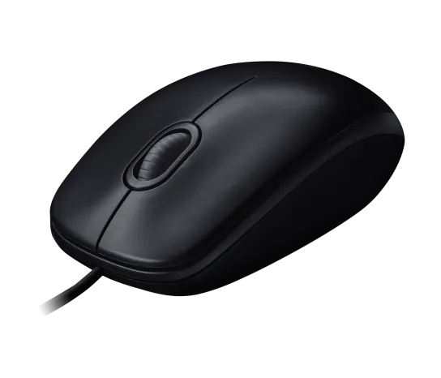

Il mouse è una periferica di ingresso del computer.Permette di controllare il puntatore visibile sulmonitor e selezionare gli elementi sullo schermo.
Il pulsante sinistro permette di selezionare elementie aprire collegamenti. Il pulsante destro apregeneralmente un menu di opzioni.La rotellina permette di scorrere le pagine.
Spostando il mouse su una superficie, il puntatoresi muove sullo schermo. Il mouse si utilizza spesso insieme alla, per esempio per selezionare una casella e scrivere al suo interno.